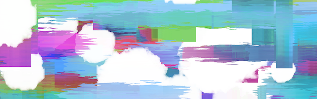

Balanced Movement
Though stochastic process, a dynamic equilibrium can be achieved. By transition between three different action states (generation, modifcation, and destruction) governed by transition probability matrix, canvas continuously changes. However, the overall chracteristic determined by the transition probability matrix is maintained.

